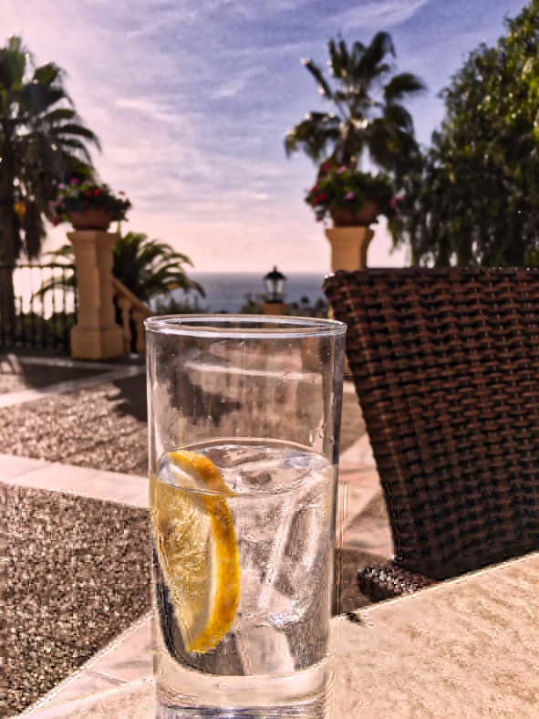
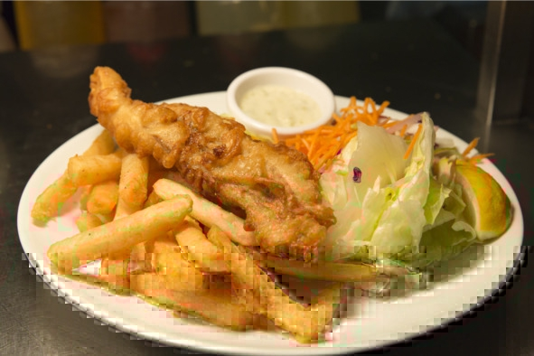
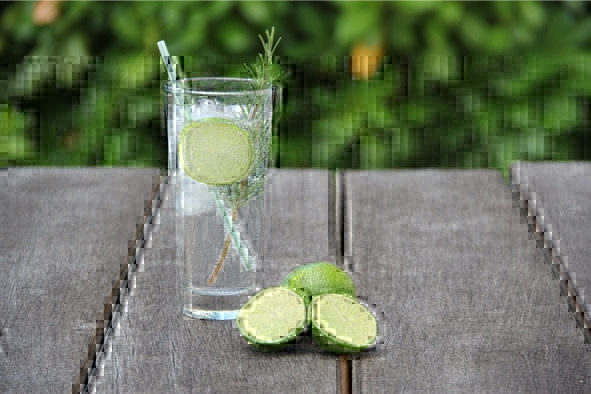

Понятие и виды джина
Джин (gin) – алкогольный напиток крепостью 30—48% об., изготовляемый путем настаивания спирта на ягодах можжевельника (основной ингредиент) и других добавках с последующей дистилляцией (перегонкой) готовой настойки. Второе неофициальное название напитка – можжевеловая водка. Именно можжевельник в сочетании с травами и специями, а также медленная, буквально по капле, дистилляция придают джину неповторимый суховатый вкус и легкий холодок во рту.
Ассортимент не отличается особым разнообразием, существует только два основных вида джина: London dry gin («сухой лондонский джин») и голландский jenever («женевер»). В некоторых классификациях еще упоминаются plymouth («плимутский») и yellow gin (желтый джин).
В большинстве случаев, если речь идет о джине, имеют в виду именно сухой лондонский.
Сухой лондонский джин не содержит сахара. Несмотря на название, производится во многих странах, не только в Лондоне. Крепость колеблется от 40 до 47% об. Кроме можжевельника могут использоваться и другие добавки: кориандр, корень фиалки, цитрусовые, цедра лимона и пр.
Женевер (от голландского jeneverbes – можжевельник) отличается от английского ярко выраженным зерновым запахом, чуть сладковатым вкусом и более сложной технологией производства. Эта разновидность популярна в Нидерландах, Бельгии, некоторых районах Германии и Франции. Женевер имеет крепость от 30 до 48% об. и является названием, контролируемым по происхождению. На данный момент насчитывается 11 аппелласьонов производства, которые расположены в перечисленных выше странах. Традиционно женевер изготавливают из соложеных зерновых культур (ячменя, ржи, пшеницы, кукурузы) методом тройной перегонки. Еще до первой дистилляции в солодовое вино (брагу) добавляют ягоды можжевельника и другие травы: полынь, кориандр, тмин, зверобой и т. д., а готовый дистиллят разводят водой, чтобы получить требуемую крепость. Женевер традиционно подают слегка охлажденным до 15—18° C или комнатной температуры в тюльпанообразных стопках, причем напиток принято наливать до краев, так, что первый глоток нужно делать «без рук», отхлебывая из поставленного на стол бокала. Закусывают голландский джин цитрусами, морепродуктами, мясными блюдами.
Plymouth gin производится в английском городе Плимут графства Девоншир. Эта разновидность напитка защищена авторским правом. Только производители Плимута имеют право указывать на этикетках название Plymouth Gin. По технологии производства, качеству и крепости практически не отличается от лондонского вида, но имеет более сильные тона можжевельника, кардамона и цитрусовых. Рекомендован к употреблению в чистом виде со льдом и кусочком лимона. По состоянию на 2017 год этот вид выпускает всего один производитель.
Yellow gin – джин янтарного цвета крепостью 39—45% об., который в процессе производства (голландская технология) настаивают в дубовых бочках из-под хереса. В продаже напиток встречается очень редко. Его пьют в чистом виде при комнатной температуре.
Разница между лондонским сухим джином и женеверомЛондонский сухой джин является повторно дистиллированной настойкой ягод можжевельника на чистом спирте, в то время как в женевер ягоды и травы добавляют на этапе перегонки браги, иногда ингредиенты помещают не в перегонный куб, а располагают сверху на решетке, чтобы спиртовые пары лучше ароматизировались. В результате настоящий голландский джин мягче, ароматнее и слаще лондонского.
Краткая история женевера и джинаИстория джина началась в XI веке в Голландии – именно в нидерландских монастырях появились можжевеловые настойки, используемые преимущественно в медицинских целях. Однако можжевеловая эссенция так понравилась населению, что псевдобольные стали обращаться за медицинской помощью даже без объективных причин, только для того, чтобы врач выдал им желанную порцию.
Первый дошедший до нас печатный рецепт женевера датируется XVI веком, а в середине XVII столетия популяризации напитка способствовал доктор Франциск Сильвиус. Вопреки расхожему заблуждению эскулап не изобретал джин, это спиртное появилось гораздо раньше и даже фигурирует в пьесе Филиппа Мэссинджера «Герцог Миланский», написанной в 1623 году, когда Сильвиусу еще не было и десяти лет. Мало того, в записях Францискуса нет ни единого упоминания голландского джина, хотя доподлинно известно, что доктор работал с можжевельником и использовал его в своих рецептурах. С 1606 года женевер стал облагаться налогами как алкогольный напиток, а не лекарственное средство, что косвенно свидетельствует о преобладании «можжевеловки» на застольях, а не в аптечных шкафчиках.
Голландский джин был известен в Англии под названием «нидерландская доблесть»: во время Тридцатилетней войны 1618—1648 гг. британские солдаты заметили, как отважны их голландские коллеги, и отнесли это на счет женевера, входившего в рацион фламандских воинов. Затем последовала Славная революция 1688 года, когда британский трон занял голландец Вильгельм Оранский, и джин окончательно закрепился в Британии. Впрочем, воссоздать на берегах туманного Альбиона оригинальную технологию не удалось, так появился менее крепкий, сладкий и ароматный «лондонский сухой».
Сначала напиток изготавливали из низкокачественной пшеницы, непригодной для производства «благородного» пива. Это позволило использовать сырье, которое раньше просто выбрасывали, кроме того, для варки джина не требовалась лицензия, достаточно было публично заявить о своем намерении и выждать десять дней. Все это наряду с высокими пошлинами на импортный алкоголь привело к тому, что в 1740 году в Англии производилось в шесть раз больше джина, чем эля, а из 15 тысяч питейных заведений как минимум половина специализировалась на джине. Низкое качество компенсировалось доступной ценой, и очень скоро джин стал «официальным» напитком бедноты – доходило до того, что напитком расплачивались с чернорабочими и прислугой.
Не обошлось в истории джина и без волнений. С 1729 года в Британии для производства требовалось покупать лицензию за 20 фунтов, также винокуры должны были платить 2 шиллинга налога с каждого галлона продукции. 29 сентября 1736 года правительство представило крайне непопулярный «джиновый акт», облагавший высокими налогами продавцов джина. Теперь лицензия на розничную продажу стоила 50 фунтов, а пошлина выросла до фунта за галлон, пропорционально этому подскочили и цены на сам напиток. Последовали народные бунты, в результате пошлины были сначала снижены, а в 1742 году и вовсе отменены.
Девятью годами позже, в 1751 году, власти действовали уже умнее: второй «джиновый акт» предписывал производителям можжевеловой водки распространять свою продукцию только среди лицензированных продавцов, что способствовало повышению качества алкоголя и упорядочивало многообразие рецептур и сортов. Местные магистраты получили полномочия следить за выполнением акта и контролировать эту сферу. Схема оказалась настолько удачной, что функционирует до сих пор.
В 1832 году была изобретена вертикальная перегонка при помощи дистилляционной колонны и почти сразу же появился лондонский сухой джин, каким мы его знаем.
В XVIII веке писатели и ученые того времени отмечали, что лондонские низшие слои населения буквально «не просыхают» с утра до вечера. Однако дело в том, что для необеспеченных людей джин был единственным доступным способом защититься от многочисленных желудочных инфекций.
В XIX веке ненадолго стал популярен джин Old Tom – переходное звено между женевером и лондонским сухим: он все еще достаточно мягкий и сладкий, но не такой ароматный, как нидерландский аналог. Old Tom был попыткой обойти закон, регулирующий продажу джина. На питейных заведениях, в которых подавался напиток, рисовали тайный знак – черного кота. Сейчас этот сорт можно встретить только в нескольких заведениях, он почти вышел из употребления и пользуется расположением только среди малочисленных старомодных ценителей.
С 2009 года во второе воскресенье июня празднуется международный день джина.
Как пить джин (сухой лондонский)Джин можно пить тремя разными способами:
1. В чистом виде. Подходит для любителей крепкого алкоголя. Охлажденный до 4—6° C неразбавленный джин подают в качестве аперитива. Во рту чистый джин вызывает ощущение холода. Как и любой другой крепкий алкоголь, джин лучше сочетать с мясными и сытными блюдами. Однако англичане могут закусить напиток джемом (в некоторых источниках встречается слово «мармелад», но это просто ошибка перевода). Еще британцы подают к джину сладкие тосты, а самые рисковые смешивают его в шейкере с вареньем.
Более привычные для русского человека закуски к джину:
– несладкая выпечка. Звучит странно, однако можжевеловая водка прекрасно сочетается с мучными изделиями;
– огуречные сэндвичи. Свежий вкус огурца хорошо оттеняет травяной аромат. Некоторые бармены даже украшают коктейли с джином долькой огурца вместо апельсина или вишенки;
– креветки (на тостах или в виде креветочного салата);
– жареная рыба с картошкой (традиционное английское блюдо – fish&chips);
– мягкий сыр с плесенью – чаще подают к голландскому женеверу, но сыр неплохо сочетается и с лондонским сухим;
– в Бельгии к джину подают лосося, морепродукты, твердые сыры. В остальной Европе любят закусывать джин оливками, маринованным луком, лаймом, иногда – пирожными, темным шоколадом, десертами.

Fish&chips – традиционная английская закуска к джину
2. Разбавленным. Джин смешивают с водой, колой, содовой или фруктовыми (преимущественно цитрусовыми) соками и даже чаем. Главное преимущество этого способа – возможность регулировать крепость спиртного в своем бокале.
Возможные варианты:
– Соки. Джин можно разбавлять любым соком, рекомендуемая (но не обязательная) пропорция 1:4. Оптимальным вариантом считаются кислые и цитрусовые фреши: лимонный, апельсиновый, грейпфрутовый, вишневый и яблочный (из зеленого яблока).
– Вода. Ценители «чистого» вкуса, желающие немного снизить крепость, разбавляют джин негазированной обычной или минеральной водой.
– Чай. В бутылку джина объемом 0,7 л добавить четыре пакетика чая с бергамотом (Earl Grey), оставить при комнатной температуре минимум на два часа. Затем чай выбросить, а джин пить со льдом или с тоником. Если нет времени ждать, пока спиртное пропитается чайным ароматом, можно просто долить в стакан джина холодный эрл грей. Также бергамотовый чай заменяют ромашковым.
– Кола. Джин с колой смешивают в пропорции 1:1 и пьют со льдом.
3. В составе коктейлей. Это самый популярный вариант употребления. Мягкий чистый вкус и высокая крепость позволяют смешивать джин с другими ингредиентами, получая отменные коктейли.
Популярные коктейли с джином Gin-Tonic («Джин-Тоник»)Впервые смешивать джин с тоником начали британские солдаты в XVIII веке, воевавшие в Индии. Так они спасались от малярии и цинги.
Ингредиенты:
– джин – 50 мл;
– тоник – 100 мл;
– лайм – 1—2 дольки;
– лед в кубиках – 100 г.
Рецепт: высокий бокал с толстым дном (хайбол) на треть заполнить льдом. Добавить джин, подождать 30—40 секунд, пока он не начнет потрескивать от холода. Налить холодный тоник. Выжать в стакан сок одной дольки лайма (в крайнем случае подойдет лимон), другая долька используется для украшения напитка.

Джин-тоник
Negroni («Негрони»)Коктейль придумал граф Камилло Негрони, родившийся в 1868 году в семье флорентийских аристократов. Будучи военным, он много путешествовал по миру, пробуя спиртное разных стран. Рецепт назван в честь автора в 1948 году.
Ингредиенты:
– джин – 30 мл;
– биттер Campari – 30 мл;
– красный вермут – 30 мл;
– апельсин – 1 долька;
– лед в кубиках – 100 г.
Рецепт: бокал доверху наполнить льдом. Добавить джин, вермут и Campari, перемешать. Украсить долькой апельсина.
Tom Collins («Том Коллинз»)Отличается хорошо сбалансированным кисло-сладким вкусом и освежающим эффектом. Этот коктейль стал прародителем целой группы, которая готовится на основе крепкой алкогольной основы с добавлением лимонного сока и газировки. Том Коллинз – вымышленный персонаж, придуманный в Северной Америке в конце XIX века ради игры: сговорившись, группа людей начинала разговор о несуществующем Томе Коллинзе. При этом в компании обязательно был один человек, который не знал о заговоре. «Жертве» казалось, что Тома знают все в мире, кроме нее.
Ингредиенты:
– джин – 50 мл;
– лимонный сок – 25 мл;
– сахарный сироп – 25 мл;
– содовая или «Спрайт» – 100 мл;
– коктейльная вишня – 1 штука (необязательно);
– апельсин – 1 долька (необязательно);
– кубики льда – 350 г.
Рецепт: высокий бокал доверху наполнить кубиками льда. Смешать в шейкере со льдом (или предварительно охладить ингредиенты) сироп, лимонный сок и джин. Перелить смесь в бокал через стрейнер (ситечко). Аккуратно добавить содовую (появится много пены), перемешать ложечкой. Готовый коктейль украсить вишенкой и долькой апельсина.
White lady («Белая леди»)Коктейль запоминается мягким, хорошо сбалансированным цитрусовым вкусом с легкой кислинкой. Происхождение названия не установлено. Самые популярные версии: в честь известного британского приведения, от сорта белой розы из Китая, из-за мягкого вкуса и характерного цвета.
Ингредиенты:
– джин (сухой лондонский) – 40 мл;
– апельсиновый ликер («Трипл Сек» или «Куантро») – 30 мл;
– лимонный сок – 20 мл;
– кубики льда – 200 г;
– апельсиновая цедра или долька лимона – 1 штука.
Рецепт: смешать все напитки в шейкере со льдом. Полученную смесь перелить через ситечко в охлажденную коктейльную рюмку (бокал для мартини). Украсить готовый коктейль лимонной долькой или апельсиновой цедрой. Пить небольшими глотками.
Bronx («Бронкс»)Коктейль создан барменом отеля Waldorf Джонни Солоном и назван в честь зоопарка Bronx Zoo, в котором за несколько дней до того, как придумать рецепт, побывал бармен.
Ингредиенты:
– джин – 20 мл;
– вермут rosso – 10 мл;
– вермут dry – 10 мл;
– апельсиновый сок – 20 мл.
Рецепт: положить в шейкер кубики льда и все остальные ингредиенты, несколько раз встряхнуть, затем перелить в бокал для коктейлей.
Известные марки джина Gordon’s («Гордонс»)Британский джин, выпускаемый с 1769 года. Сегодня бренд прочно удерживает позиции самого продающегося «лондонского сухого» в мире и уже более ста лет является любимым джином самих англичан.
Первым производителем и крестным отцом напитка стал шотландец Александр Гордон. Изобретенный рецепт оказался настолько удачным, что не меняется до сих пор (и, разумеется, хранится в строжайшем секрете – точный состав и пропорции знают лишь 12 человек).
Известно только, что в рецептуру входит можжевельник, кориандр, ангелика, лакрица, корень фиалки, цедра апельсина и лимона. Дистилляция длится десять дней, кроме того, в напиток не добавляют сахар – джин «Гордонс» настолько хорош, что не имеет изъянов вкуса, которые требовалось бы маскировать.
Beefeater (Бифитер)Еще одна старинная английская марка – первый «Бифитер» выпущен в Лондоне в 1862 году Джеймсом Барроу. Компания принадлежала потомкам первого производителя вплоть до 1994 года, когда предприятие выкупила алкогольная корпорация Pernod Ricard.
На сайте бренда прямо указан состав джина: можжевельник, корень ангелики, кориандр, лакрица, миндаль, корень фиалки, померанец (горький апельсин) и стружка лимона, однако это не значит, что компания не удержала пару-другую ингредиентов в секрете, к тому же пропорции неизвестны.
Все травы и добавки сутки вымачивают перед дистилляцией, что позволяет добиться максимально глубокого и насыщенного вкуса. Готовый спирт увозят в Шотландию, где разбавляют и разливают по бутылкам.
Еще одна особенность марки заключается в том, что этот джин обладает разной крепостью в зависимости от рынка сбыта: в США поставляется версия в 47 градусов, в то время как весь остальной мир довольствуется только 40%.
Bombay Sapphire («Бомбей Сапфир»)Несмотря на название, явно отсылающее к временам Ост-Индской компании, это довольно молодой бренд, который появился всего чуть более 30 лет назад, в 1987 году, и сегодня принадлежит концерну Bacardi.
В рецепт напитка входит десять ингредиентов (не считая 100-процентного зернового спирта): миндаль, лимонная цедра, лакрица, ягоды можжевельника, корень фиалки, ангелика, кориандр, кассия, кубеба и мелегетский перец (райские зерна).
Джин «Бомбей Сапфир» дистиллируют не в медных, а в особых «каттерхидских» кубах. Травы помещают в специальные сетчатые корзины, чтобы пары спирта дополнительно насыщались ароматами. Благодаря этой технологии джин приобретает легкий цветочный букет.
Tanqueray («Танкерей»)Эта марка тоже родом с берегов Туманного Альбиона, но наибольшего признания бренд добился, как ни странно, в Новом, а не Старом Свете, а именно в США. Как и «Гордонс», «Танкерей» назван в честь основателя компании – Чарльза Танкерея, открывшего производство в лондонском Блумбери в 1830 году.
Это London Dry Gin, изготавливаемый методом двойной дистилляции с добавлением трав и специй, но каких именно – секрет производителя. Сомелье с уверенностью распознали только можжевельник, ангелику, лакрицу и кориандр. Крепость напитка варьируется от 40% до 47,3% в зависимости от рынка сбыта.
Booth’s («Бутс»)Возможно, один из старейших видов джина, изготавливаемых в наши дни – история марки началась в 1740 году. Отец-основатель бренда Филип Бут не только производил алкогольные напитки, но на вырученные деньги финансировал полярную экспедицию Росса, о чем до сих пор напоминают залив Бута, гавань Феликс и несколько других топонимов.
Особенность этого джина – выдержка в дубовых бочках из-под хереса, благодаря чему напиток имеет не прозрачный, а золотисто-желтый цвет и насыщенный букет.
Plymouth («Плимут»)Изначально так назывался любой джин, изготовленный в английском городе Плимут, это было не брендом, а названием, защищенным по происхождению. Однако сегодня в упомянутом городе осталось только одно производство, Black Friars, которому и принадлежали все права на марку вплоть до продажи в 1996 году. Сегодня бренд входит в состав концерна Pernod Ricard.
История этого джина начинается в 1793 году, хотя доминиканский монастырь (преемниками которого и являются «черные братья») существовал еще в начале XV века.
Джин «Плимут» чуть слаще, чем большинство «лондонских сухих». Считается, что это вызвано высоким содержанием различных трав, а в особенности – кореньев, благодаря чему напиток обладает «земляным» привкусом со смягченными тонами можжевельника.